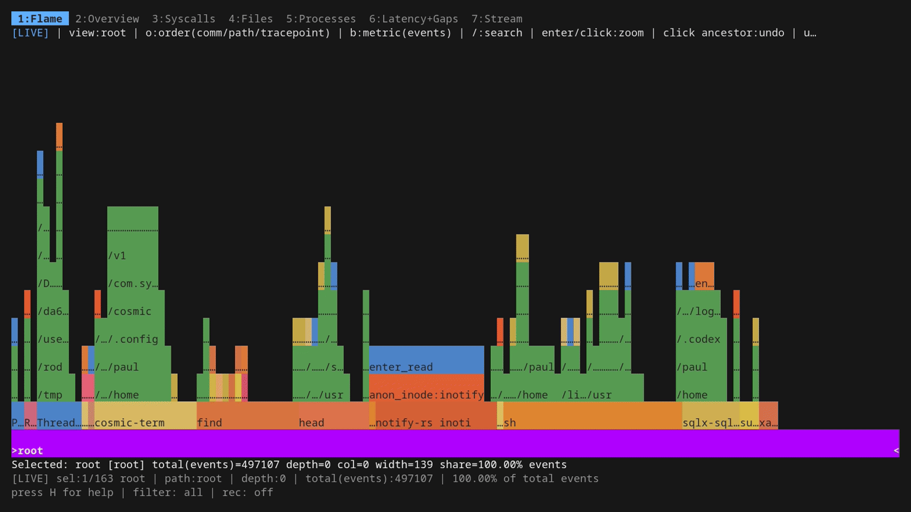
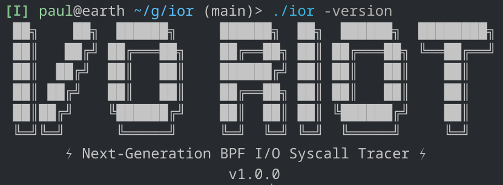

Unveiling I/O Riot NG — Part 2: install and compile once, run everywhere
Published at 2026-05-10T22:43:39+03:00
This is Part 2 of three. Part 1 is the demo-driven tour: what ior looks like, how the dashboard tabs work, how filtering and recording behave. This part is about the installation for Rocky Linux 8 and 9 and, more interestingly, why you only have to do that dance on a single machine: the resulting binary is portable to every other Linux box thanks to CO-RE (Compile Once, Run Everywhere) plus full static linking. Part 3 is the under-the-hood companion (per-event schema, async-syscall caveats, the syscall-coverage probe generator, and post-mortem SQL on the parquet output).

2026-05-08 Unveiling I/O Riot NG — Part 1: a guided tour
2026-05-11 Unveiling I/O Riot NG — Part 2: install and compile once, run everywhere (You are currently reading this)

Table of Contents
Installing ior
Published at 2026-05-10T22:41:23+03:00
Published at 2026-05-10T22:39:24+03:00
The short answer: Use Docker (or Podman). One command, no toolchain setup, works from any Docker-capable Linux host with BTF available:
git clone https://codeberg.org/snonux/ior ~/git/ior
cd ~/git/ior
mage buildDocker
First run builds a Rocky Linux 9 builder image (~15–20 minutes). Subsequent runs reuse the cached image and finish in under a minute. The resulting static binary is ./ior. That's the officially supported install path, and it's the right one for anyone who just wants to run ior without living in its build system.
Note: There's also a target for building it for Rocky Linux 8.
Why native installation is a mess
If you're curious why Docker became the answer, the native install on Rocky Linux 9 illustrates the problem well. Three separate things bite you before you even get to mage build:
Rocky 9 ships neither libelf.a nor libzstd.a. There are no *-static subpackages for either, only the dynamic .so files. Both have to be compiled from source. libelf from the elfutils source RPM, libzstd from the upstream GitHub release tarball.
Rocky 9 also only ships Go 1.25.x, but ior requires 1.26+ (due to improved CGo performance). So Go itself has to be installed from go.dev in parallel with the library builds.
What the Docker build is actually doing
The Dockerfile encodes exactly the same steps that a native install on Rocky 9 would require. Here is the full sequence so you have a mental model of what's inside the image, and so you could reproduce it on a bare host if you ever needed to:
# 1) Enable repos and install build dependencies. CRB ships zlib-static / glibc-static.
sudo dnf config-manager --set-enabled crb
sudo dnf install -y epel-release
sudo dnf install -y gcc clang bpftool elfutils-libelf-devel zlib-static \
glibc-static libzstd-devel git make cmake wget rpmdevtools strace bpftrace
sudo dnf builddep -y elfutils
# 2) Install Go 1.26 from go.dev. Rocky 9 ships only Go 1.25.x, ior needs 1.26+.
cd /tmp
wget -q https://go.dev/dl/go1.26.2.linux-amd64.tar.gz
sudo tar -C /usr/local -xf go1.26.2.linux-amd64.tar.gz
echo 'export PATH=/usr/local/go/bin:$HOME/go/bin:$PATH' | sudo tee /etc/profile.d/go.sh
source /etc/profile.d/go.sh
# 3) Build libelf.a from the elfutils source RPM.
mkdir -p ~/src && cd ~
dnf download --source elfutils-libelf
rpm -ivh elfutils-*.src.rpm
tar -C ~/src -xjf rpmbuild/SOURCES/elfutils-*.tar.bz2
cd ~/src/elfutils-*
./configure --enable-deterministic-archives --disable-debuginfod --disable-libdebuginfod
make -C lib -j$(nproc)
make -C libelf -j$(nproc)
sudo cp -v libelf/libelf.a /usr/lib64/
# 4) Build libzstd.a from upstream (libzstd-devel doesn't ship the static archive).
cd /tmp
wget -q https://github.com/facebook/zstd/releases/download/v1.5.5/zstd-1.5.5.tar.gz
tar xzf zstd-1.5.5.tar.gz
make -C zstd-1.5.5/lib -j$(nproc) libzstd.a
sudo cp -v zstd-1.5.5/lib/libzstd.a /usr/lib64/
# 5) Clone ior + libbpfgo, pin libbpfgo, build the static libbpf archive, install mage.
mkdir -p ~/git
git clone https://codeberg.org/snonux/ior ~/git/ior
git clone https://github.com/aquasecurity/libbpfgo ~/git/libbpfgo
git -C ~/git/libbpfgo checkout v0.9.2-libbpf-1.5.1
git -C ~/git/libbpfgo submodule update --init --recursive
make -C ~/git/libbpfgo libbpfgo-static
go install github.com/magefile/mage@latest
# 6) Generate the syscall-coverage handlers against THIS kernel and build.
# IOR_FORCE_GENERATE bypasses the strict diff against the committed audit file
# (the committed audit was generated against a different kernel build, and the
# generator's safeguard would otherwise refuse to overwrite it).
cd ~/git/ior
env IOR_FORCE_GENERATE=1 GOTOOLCHAIN=auto mage generate
# GOTOOLCHAIN=auto only required for an older version than 1.26 of GO.
env GOTOOLCHAIN=auto mage all
# 7) Smoke test.
sudo ./ior -plain -duration 5
If you see Probing for 5s followed by CSV rows, the build is good. mage buildDocker runs all of this inside a container and hands you back just the final binary — the 15-minute first-run cost buys you never having to think about any of the above again.
A short detour: eBPF and libbpfgo
If you haven't touched eBPF before: it's a small in-kernel bytecode VM. You compile a tiny C program, the kernel verifies it can't crash or loop forever, and then it runs every time some hook fires — a syscall enter/exit, a kprobe, a tracepoint, a network packet. The program writes events into a ring buffer that userspace mmaps and drains. No kernel module, no patched kernel, no debug symbols required.
eBPF — the project's umbrella site (docs, talks, ecosystem)
ior plugs into the syscall tracepoints (sys_enter_openat, sys_exit_read, etc.) and the BPF side does the bare minimum: timestamp the event, copy a few fields, push to a perf ring buffer. All the heavy lifting (string interning, latency math, aggregation, the dashboard) is in Go on the userspace side.
The shape of the data flow:
kernel space │ user space (Go)
───────────────── │ ──────────────────
syscall tracepoint │
(sys_enter_openat, │
sys_exit_read, …) │
│ │
│ fires │
▼ │
BPF program (verified) │
timestamp, copy fields │
│ │
▼ │
perf ring buffer ── mmap ─────┼──▶ ior reader goroutine
│ │
│ ▼
│ intern strings,
│ latency math,
│ aggregate, render dashboard
The kernel ships a C library called libbpf that handles loading the program, attaching it to hooks, managing maps, and reading the ring buffer. There are two well-known ways to drive that from Go:
libbpf — the upstream C library
- libbpfgo (Aqua Security): a thin cgo wrapper around libbpf. You ship libbpf along with your binary and call into the same C API that bpftool and perf use.
- cilium/ebpf: a from-scratch pure-Go reimplementation of everything libbpf does (ELF parser, BTF resolver, syscall layer, the lot).
libbpfgo — Aqua Security's cgo wrapper around libbpf
cilium/ebpf — pure-Go reimplementation
I went with libbpfgo specifically because it's a wrapper, not a reimplementation.
CO-RE — the part that makes the binary actually portable
The headline fact about ior's deployment story: build it once on one box, then scp ior other-host:/usr/local/bin/ to anywhere else and it just runs. No recompile per kernel, no kernel-debuginfo dance, no DKMS hooks. Two mechanisms make that work, and they reinforce each other.
Static linking
The first is plain old static linking on the userspace side. A quick refresher on what that means, since it's central to why "scp the binary anywhere" works: when you build a normal Linux executable, the linker has two ways to wire library code into your program. Dynamic linking ("shared library") leaves a placeholder in the binary that says "at run time, find libfoo.so.6 somewhere on LD_LIBRARY_PATH and pull in its symbols." Static linking pastes the library's machine code directly into your binary at build time, so there's nothing to look up later. Dynamic is smaller on disk and lets distros patch shared libs without rebuilding everything; static is bigger but self-contained, with no surprise about which version of the library the target box happens to have, no error while loading shared libraries: libwhatever.so.6: cannot open shared object file when the target ships a newer ABI.
Go programs are statically linked by default
For Go, this is mostly a non-issue. A pure-Go binary (no cgo) is statically linked by default. The Go toolchain produces a single self-contained ELF file with no .dynamic section and no NEEDED entries. You can scp it to any Linux box of the same architecture and it just runs. That's one of the quietly nice things about Go.
cgo programs are not statically linked by default.
ior is the not-quite-pure case: it goes through cgo to call into libbpf, libelf, and libzstd, and each of those has its own .so on the build host. By default cgo links those C dependencies dynamically, which would defeat the "scp the binary anywhere" property: the target box would need to have matching .so files at matching versions, which is exactly the kind of dependency hell Go usually saves you from. The fix is the line -extldflags "-static" in ior's Magefile: it tells the external (C) linker to resolve -lbpf -lelf -lzstd -lz against the static archives (.a files) instead of the dynamic ones. That's why the install procedure above is so picky about having libelf.a and libzstd.a actually present on the build host. Without them the C-side static link fails.
The result is a single ~23 MB binary with libbpf, libelf, libzstd, and zlib all baked in. None of them are looked up dynamically at runtime. The build host's library versions stay on the build host. (A couple of glibc resolver functions — getpwnam_r and friends — do still fall back to the target's libc, which is fine on any reasonable distro and is what the linker warnings during the build are about.)
Pictorially, the three linking modes side by side:
pure Go cgo (default) cgo + -extldflags "-static"
┌────────┐ ┌────────┐ ┌────────────────────────┐
│ ior │ │ ior │ ── libbpf.so.1 ? │ ior + libbpf + libelf │
└────────┘ │ │ ── libelf.so.1 ? │ + libzstd + libz │
~few MB │ │ ── libzstd.so.1 ? └────────────────────────┘
one ELF, └────────┘ ~23 MB
no NEEDED must find matching .so one ELF,
entries on the target box at runtime no NEEDED entries
ior lives in the right-hand column.
CO-RE
The second, and the one that's actually unusual, is CO-RE (Compile Once, Run Everywhere). CO-RE is the eBPF feature that solves the "the kernel changed its struct layout between releases" problem.
The old I/O Riot was Systemtap. Systemtap programs are translated into a kernel module against the running kernel's exact headers, and that module then has to be loaded with insmod. That meant the user has to install a kernel-debuginfo package matching their running kernel, and a fresh build per host (or per kernel update).
CO-RE throws all of that out. The idea, in one paragraph: when you write a BPF program that reads task->mm->start_stack, you don't bake the offsets of those fields into the compiled program. Instead, the compiler emits relocation records ("at this instruction, fetch the offset of mm inside task_struct"). At load time, libbpf looks up the actual offsets in the target kernel's BTF (BPF Type Format, a description of every kernel struct embedded in /sys/kernel/btf/vmlinux on any modern kernel) and patches the program in place. The same .bpf.o that ran on a 5.10 Debian kernel runs on a 6.8 Fedora kernel without recompilation.
Pictorially, the contrast looks like this:
Old I/O Riot (Systemtap) New ior (libbpf + CO-RE)
───────────────────────── ────────────────────────────
.stp source .bpf.c source
│ │
│ needs THIS kernel's headers │ build ONCE against vmlinux.h
│ + debuginfo package installed │ (generated from any kernel BTF)
▼ ▼
per-host translate + compile one portable .bpf.o
│ │
▼ ▼
per-host kernel module same binary on every host
│ │
insmod / modprobe libbpf loader:
│ │ • read /sys/kernel/btf/vmlinux
▼ │ • patch field offsets
attached, this kernel only │ • verify + load
▼
attached, runs anywhere
So the operational shape is: pick one box, do the install dance from the Rocky section above (or docs/build-rocky-linux-9.md for a native Fedora/RHEL build) once, build, then distribute the 23 MB binary wherever you want to trace. The build host needs Go and clang and the static libraries. The trace hosts need a BTF-enabled kernel and sudo. That's it.
The whole "one build, every host" picture:
build host trace hosts
───────────────────── ─────────────────────────
┌─────────────────┐
│ Rocky 8 box │ sudo ior
│ kernel 4.18 │ ✓
└─────────────────┘
┌──────────────────┐ ┌─────────────────┐
│ Go + clang + │ mage all │ Debian 12 box │ sudo ior
│ libelf.a + │ ──────────▶ ior ──▶ │ kernel 6.1 │ ✓
│ libzstd.a + │ 23 MB static, CO-RE └─────────────────┘
│ libbpf static │ scp anywhere ┌─────────────────┐
└──────────────────┘ │ Fedora 39 box │ sudo ior
│ kernel 6.8 │ ✓
└─────────────────┘
each: BTF-enabled kernel + sudo
A note on cgo overhead
The cost of being a libbpf wrapper rather than a pure-Go reimplementation is cgo. Every call from Go into libbpf crosses the cgo boundary, which historically meant tens to ~hundred-ish nanoseconds of overhead per call: register save/restore, a stack switch onto g0, goroutine state bookkeeping. Cheap in absolute terms, but it adds up if you call into C inside a tight loop. ior keeps the actual hot path on the kernel side and only crosses into Go once per drained batch of events from the ring buffer, so the per-call cost is amortized over thousands of events. In practice it doesn't show up in profiles.
Go 1.26, the current release at the time of writing (early May 2026), is the one that finally took a serious bite out of cgo's per-call cost. The runtime can elide a chunk of the bookkeeping for calls that don't need it. Real-world wins depend heavily on the workload, but the rough direction is that cgo now feels closer to "an unusually expensive function call" than to "a context switch", which is the right mental model for almost everyone touching a C library from Go. The shorter version: cgo overhead used to be a real footgun for ports that called into C in the inner loop. With Go 1.26 it's a footnote unless you're doing many millions of small calls per second, in which case batching across the boundary still fixes it.
If you want to go deeper
If any of this sounds interesting and you want to learn how to write your own BPF programs, two books are the standard recommendations and both well worth the time:
- "Learning eBPF" by Liz Rice (O'Reilly, 2023) is the friendlier on-ramp. It walks through writing your first programs end-to-end, covers CO-RE and BTF in plain English, and is the book I'd hand to someone who has never touched the kernel side before. Liz also gave the canonical "what is eBPF" conference talk floating around YouTube, which makes a good 40-minute companion.
- "BPF Performance Tools: Linux System and Application Observability" by Brendan Gregg (Addison-Wesley, 2019) is the encyclopedia. It's where you go after you've understood the basics and now want a complete reference for tracing every subsystem in the kernel — file systems, networking, scheduler, languages, applications — with worked tools for each. The flame-graph-driven analysis style throughout is also exactly how ior's own flamegraph tab thinks about a workload.
Between the two, Rice teaches you the moving parts and Gregg teaches you what to do with them.
E-Mail your comments to paul@nospam.buetow.org :-)
Other related posts are:
2026-05-11 Unveiling I/O Riot NG — Part 2: install and compile once, run everywhere (You are currently reading this)
2026-05-08 Unveiling I/O Riot NG — Part 1: a guided tour
2018-06-01 Realistic load testing with I/O Riot for Linux
Back to the main site